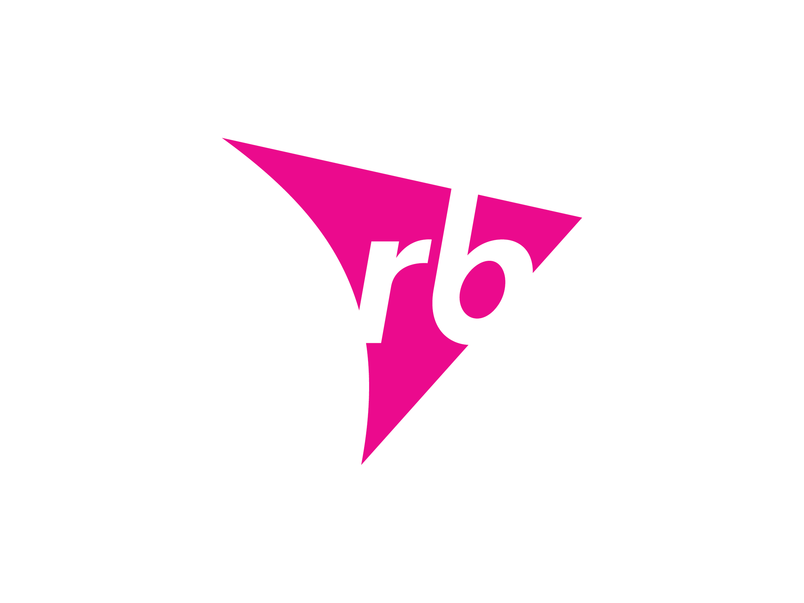

<!--The content below is only a placeholder and can be replaced.-->
<!--<div class="logo">
  <p>Mead Johnson Nutrition</p>
</div>-->
<!---->
<div class="container-fluid">
  <mat-toolbar color="secondary" class="mat-elevation-z8" style="min-width: 850px">
    <mat-toolbar-row>
      
      <span>Capacitación</span>
      <span class="spacer"></span>
      <div *ngIf="svrLogin.logedin">
        <div style="margin: 0; padding: 2px; min-width: 400px; text-align: center;">
          <span style="font-size: small; color: deeppink;">{{svrLogin.currUser.name}}</span>
          <span style="font-size: x-small;">Ultimo Ingreso: {{svrLogin.currUser.updated_at | date:'medium'}}</span>
        </div>
      </div>
      <div *ngIf="svrLogin.administrador">
        <mat-menu #operacionesMenu="matMenu" yPosition="above" [overlapTrigger]="false">
          <a mat-menu-item [routerLink]="['/captura-calificaciones']">Actualiza Curos Impartidos</a>
          <a mat-menu-item [routerLink]="['/dashboard']">Actauliza Procedimientos Acreditados</a>
          <!--<button mat-menu-item>Operación 1</button>
          <button mat-menu-item>Operación 1</button>-->
        </mat-menu>

        <button mat-button="" [matMenuTriggerFor]="operacionesMenu" >
          <i class="material-icons">work</i>
          Operación
        </button>

        <mat-menu #consultasMenu="matMenu" yPosition="above" [overlapTrigger]="false">
          <button mat-menu-item>Consultas 1</button>
          <button mat-menu-item>Consultas 1</button>
          <button mat-menu-item>Consultas 1</button>
          <button mat-menu-item>Consultas 1</button>
        </mat-menu>

        <button mat-button="" [matMenuTriggerFor]="consultasMenu" disabled>
          <i class="material-icons">folder</i>
          Consultas y Reportes
        </button>

        <mat-menu #configMenu="matMenu" yPosition="above" [overlapTrigger]="false">
          <a mat-menu-item [routerLink]="['/cfg-cap-general']">Catálogo de Cursos en General</a>
          <a mat-menu-item [routerLink]="['/cfg-cap-especifica']">Catálogo de Cursos Especificos</a>
          <a mat-menu-item [routerLink]="['/cfg-cap-pdm']">Catálogo de PDMs</a>
          <a mat-menu-item [routerLink]="['/cat-areas-puestos']">Adm. Areas y Puestos</a>
          <a mat-menu-item [routerLink]="['/adm-personal']">Adm. de Personal</a>
          <hr>
          <a mat-menu-item [routerLink]="['/programa-cursos-general']">Programación de Cursos en General</a>
          <a mat-menu-item [routerLink]="['/programa-cursos-especificos']">Programación de Cursos Especificos</a>
          <a mat-menu-item [routerLink]="['/programa-pdms']">Programacion de PDMs</a>
          <hr>
          <a mat-menu-item [routerLink]="['/dashboard']">Dashboard</a>
          <a mat-menu-item [routerLink]="['/about']">Acerca de...</a>
      </mat-menu>

        <button mat-button="" [matMenuTriggerFor]="configMenu">
          <i class="material-icons">settings</i>
          Configuración
        </button>
      </div>

      <div *ngIf="svrLogin.logedin">
        <mat-menu #seguridadMenu="matMenu" yPosition="above" [overlapTrigger]="false">
          <button mat-menu-item>Usuarios</button>
          <button mat-menu-item>Perfiles</button>
        </mat-menu>

        <button mat-button="" [matMenuTriggerFor]="seguridadMenu" (click)="dologout()">
          <i class="material-icons">lock_outline</i>
          logout
        </button>
      </div>
    </mat-toolbar-row>
  </mat-toolbar>
  <div class="container">
    <router-outlet></router-outlet>
    <!--<app-captura-calificaciones></app-captura-calificaciones>-->
  </div>
</div>

